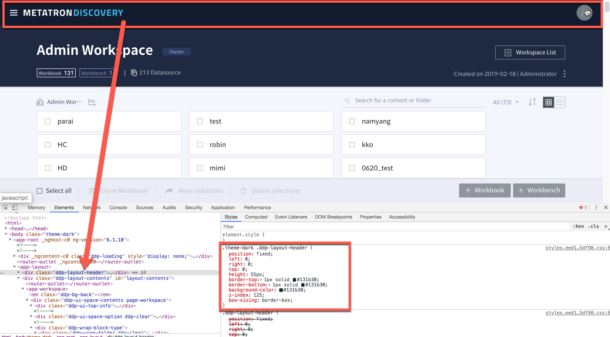

Make your own theme (tone and manner)¶
Here’s how to change Metatron Discovery’s tone and manner theme. There are currently two themes in Metatron Discovery (white and black).
You can also follow this article to create your own theme.

In order to change the theme, we manage color-related css by theme. If you click the button to change the theme in UI, change the CSS by putting the theme class in the body tag of html. The white theme is our default theme. All theme CSS is managed by wrapping it in a white theme.

The code is shown below.
When creating a new theme, create a class called ‘theme-xxx’ and paste it in front of all CSS. This will change all colors at once when the theme class is applied to the body. Check out the image below.

Below is the css code.